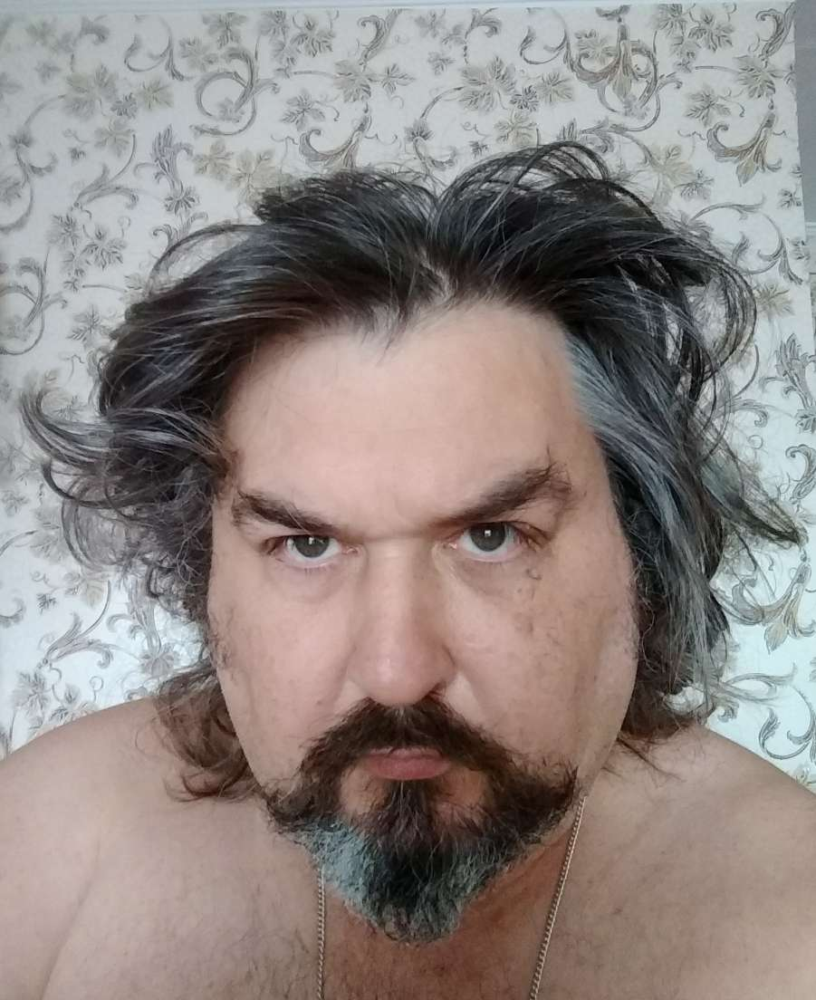

|  |
Datum narození: 7.5.1299 |
Narodil jsem se pod šťastnou hvězdou, jako vítané dítě ve šlechtické
rodině, která žila ve svém vlastním majetku na břehu teplého moře. Lidé,
kteří nemají příjemný vzhled, jsou prostě odsouzeni k vysoké morálce.
Díky Bohu, nebyl jsem zatížen potřebou udržovat
puritánství. A nikdy jsem k tomu neměl sklony. Dostalo se mi skvělého
vzdělání a vychování. Nedůvěra ve své schopnosti mi nechyběla a díky
přirozené přitažlivosti, nabytým znalostem a daru výřečnosti jsem měl
vše, abych dobyl svět. Což začal s velkým potěšením, jakmile opustil
rodinné hnízdo. Prožil jsem úžasný život plný dobrodružství. Nebyl jsem
anděl, ale ve věcech cti jsem byl svědomitý a nejednal jsem proti svému
svědomí. Noblesse oblige.
Nevím, co ještě píšou v
této sekci.
| Datum | Dějiny |
|---|---|
| 7.5.1299 - 18.3.1314 | Od narození měl jsem tu čest být představen Jeho Milosti panu Jacques de Molay s úmyslem převzít funkci jeho páže. Věrně jsem sloužil svému vládci až do dne jeho popravy. |
| 1314 - 1387 | Schovával jsem se před odplatou a byl vycvičen v tajné pevnosti na Středním východě ve slavné sektě hašašinů. |
| 1387 - 1419 | Působil jsem jako nejvyšší astrolog na dvoře burgundských vévodů. |
| 1419 - 1434 | Účastnil jsem se všech válek husitských, ve všech křížových výpravách úspěšně odrážel útoky papeženců, bojoval udatně pod praporem slavného pana Jana Žižky z Trocnova, dej Bůh jeho duši. Amen. |
| 1434 - 1800 | Plavil jsem se po mořích a oceánech, účastnil jsem se námořních bitev, hlavně proti britské koruně. |
| 1800 - 2024 | Učil jsem se u tibetských mnichů, burjatských šamanů a sibiřských medvědů, načež upadl do zimní hibernace. |
| 11.4.2024 | Nastoupil jsem na kurzy ENGETO |